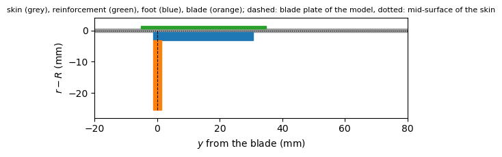
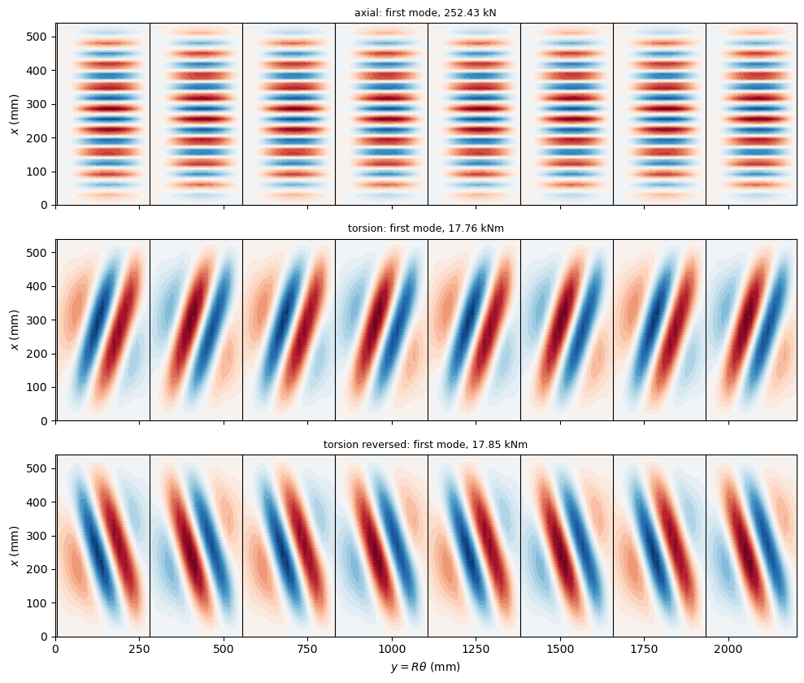

Buckling of a CFRP stringer-stiffened cylinder under axial compression and torsion#
Lanzi, Bisagni and Cordisco [1] designed cylinders of woven carbon fabric stiffened by eight L-shaped stringers to work in the post-buckling range under torsion, and analysed them with ABAQUS (shell elements S4R, a geometrically nonlinear analysis with the Riks method or an explicit dynamic analysis) in two configurations: A, with stringers only, and B, with a central ring as well. Two specimens of configuration B were manufactured and tested in torsion [1, 2, 3]; configuration A was analysed only. For configuration A, [1] gives the first buckling load under axial compression, 213 kN (Table 2), and the first buckling torque, 13.5 kNm (Tables 3 and 4).
Here these two first buckling loads of configuration A are computed with a linear buckling analysis of a model of discrete stringers:
the skin with the BFSC cylinder element of Sanders-type kinematics,
BFSCCylinderSanders;the L-shaped stringer assembled from two plates: the foot, a plate bonded on the inner surface of the skin, and the blade, a plate of BFSC plate elements
BFSCPlate2Dof bfscplate2d rotated 90 degrees on top of the foot, in the plane \((x, r)\), connected to the skin and the foot along their common edge;the reinforcing strips of the skin under the stringers as plates bonded on its outer surface.
The model is given by the module composite_stiffened_shell.py, next to this notebook, also used in First buckling of blade-stiffened CFRP curved panels. Besides bfsccylinder, it needs bfscplate2d, composites, structsolve and Matplotlib.
Data of configuration A#
All values in N and mm. Each value is given with the place where it was read ([1] page numbers 75-2 to 75-5):
quantity |
value |
source |
|---|---|---|
\(E_{11}\), \(E_{22}\), \(G_{12}\) |
57765, 53686, 3065 N/mm\(^2\) |
[1] Table 1; also [2] Table 1, [3] Table 1 |
\(\nu_{12}\) |
0.048 |
[1] Table 1 |
ply thickness |
0.330 mm |
[1] Table 1 |
free length \(L\) |
540 mm (overall 700 mm with the two tabs) |
[1] p. 75-2; [2] Section 2 |
internal diameter |
700 mm |
[1] p. 75-2 |
skin |
three layers \([45/0/-45]\), 0 along the axis |
[1] p. 75-2; [3] p. 1808 |
reinforced skin areas |
40 mm wide, on the outer surface, under the stringers, three layers added: \([-45/0/45]\) in [3], \([45/-45/45]\) in [1] |
[1] p. 75-2; [3] p. 1808 |
stringers |
8, L-shaped, equally spaced and equally oriented, bonded and riveted on the inner surface |
[1] p. 75-2, 75-3 |
L-section |
blade 25 mm, part in contact with the skin (foot) 32 mm, corner of mean radius about 7 mm |
[1] p. 75-2; [2] Table 2 (\(25 \times 32\)) |
stringer lay-up |
8 plies, \([0/90]_{2S}\) |
[2] Table 2 and p. 140, [3] p. 1808; see below |
The stringer lay-up is printed in [1] as “eight \([0°/90°]_{4S}\) oriented layers”, where eight layers and \([0/90]_{4S}\) (16 plies) disagree. [2] (Table 2, third shell, the ring-stiffened shell tested in torsion, whose stringers are “equal in number and dimensions to those of the first configuration”) and [3] (p. 1808) give eight plies \([0/90]_{2S}\), and the nominal thicknesses of [2] Table 3 for that shell agree with three plies of skin, three of reinforcement and eight of stringer, as computed below. The model uses \([0/90]_{2S}\).
The reinforcement is \([45/-45/45]\) in [1] and \([-45/0/45]\) in [3] (for the manufactured shells with ring). The model uses the \([-45/0/45]\) of [3], which is balanced: the \([45/-45/45]\) of [1] has two \(+45\) plies and one \(-45\), so that its extension-shear coupling stiffness \(A_{16}\) is not zero. The \([45/-45/45]\) of [1] is a variant below. The order in which the plies of the skin and of the reinforcement are listed is taken from the inner to the outer surface (the skin is not symmetric, so that the order changes its coupling stiffnesses \(\boldsymbol{B}\)); the reversed order of the skin is a variant below. TODO(author): is the stacking of [1] listed from the inner surface of the skin? And are the reinforcements of 40 mm centred on the 32 mm of the foot, as assumed below?
[1]:
%matplotlib inline
import time
import numpy as np
from numpy import pi
import matplotlib.pyplot as plt
from composites import laminated_plate
from composite_stiffened_shell import (StiffenedShell, node_coordinates,
plot_skin_w, DOF, U, V)
# [1] Table 1, N/mm^2 and mm; transverse shear moduli not used (Kirchhoff)
E11, E22, G12, nu12 = 57765., 53686., 3065., 0.048
laminaprop = (E11, E22, nu12, G12, G12, G12)
tp = 0.330
L = 540.
D_internal = 700.
nstringers = 8
skin_stack = [45, 0, -45] # from the inner surface
strip_stack = [-45, 0, 45] # [3]; from the skin outwards
stringer_stack = [0, 90, 0, 90, 90, 0, 90, 0] # [0/90]_2S
blade_height = 25. # outer dimension, from the inner surface of the skin
foot_width = 32. # outer dimension, including the blade
strip_width = 40.
h_skin = len(skin_stack)*tp
t_strip = len(strip_stack)*tp
t_str = len(stringer_stack)*tp
R = D_internal/2 + h_skin/2 # mid-surface of the skin
pitch = 2*pi*R/nstringers
print('skin %.2f mm, reinforcement %.2f mm, stringer %.2f mm thick'
% (h_skin, t_strip, t_str))
print('nominal skin + stringers: %.2f mm, [2] Table 3 (third shell): 4.62 mm'
% (h_skin + t_strip + t_str))
print('R = %.3f mm, stringer pitch %.2f mm' % (R, pitch))
skin 0.99 mm, reinforcement 0.99 mm, stringer 2.64 mm thick
nominal skin + stringers: 4.62 mm, [2] Table 3 (third shell): 4.62 mm
R = 350.495 mm, stringer pitch 275.28 mm
The model of a stringer#
Over one pitch \(2 \pi R/8\), the model has the plates:
the skin, BFSC cylinder elements on the mid-surface of radius \(R\) = 350 + 0.99/2 mm;
the reinforcement, a plate bonded on the outer surface of the skin, and the foot, a plate bonded on its inner surface: each is a laminate of BFSC cylinder elements on the nodes of the skin, whose stiffness matrices \(\boldsymbol{A}\), \(\boldsymbol{B}\), \(\boldsymbol{D}\) are referred to the mid-surface of the skin through the offset of its plies, \(\pm (h_{skin} + t)/2\) (a perfect bond, the plates sharing the normal of the Kirchhoff hypothesis); the stiffnesses of the plates add up. A flat plate element does not fit the curved surface of the skin (the foot spans 5 degrees of arc), hence the cylinder element;
the blade, a plate of BFSC plate elements in the plane \((x, r)\), rotated 90 degrees on top of the foot at its edge, from the mid-surface of the skin to the tip, of height \(25 + h_{skin}/2\), whose root has the translations and the rotation about \(x\) of the skin and foot along their common edge (see the docstring of the module).
The outer dimensions of the L, 25 and 32 mm, are taken from the inner surface of the skin and from the outer face of the blade; the foot of the model spans \(32 - t/2\) from the mid-plane of the blade. The corner of radius 7 mm and the rivets are not modelled, and the blade plate overlaps the skin and the foot over its first \(h_{skin}/2 + t\) = 3.1 mm, which adds 8 mm\(^2\) to the 67 mm\(^2\) of the blade. The plot shows one stringer over the developed section (radial dimensions magnified):
[2]:
skin = laminated_plate(skin_stack, plyt=tp, laminaprop=laminaprop)
foot = laminated_plate(stringer_stack, plyt=tp, laminaprop=laminaprop,
offset=-(h_skin/2 + t_str/2))
blade = laminated_plate(stringer_stack, plyt=tp, laminaprop=laminaprop)
foot_model = foot_width - t_str/2 # from the mid-plane of the blade
# reinforcement centred on the footprint of the L, of foot_width
s_before = (strip_width - foot_width)/2 + t_str/2
s_after = (strip_width - foot_width)/2
def strip_laminate(stack):
return laminated_plate(stack, plyt=tp, laminaprop=laminaprop,
offset=h_skin/2 + len(stack)*tp/2)
def build(nbay, nfoot, nx, nh, skin_lam=skin, strip_lam=None,
bottom_rotation_free=False):
strip_lam = strip_laminate(strip_stack) if strip_lam is None else strip_lam
segments = []
for k in range(nstringers):
segments += [(s_before, 1), (foot_model, nfoot), (s_after, 1),
(pitch - strip_width, nbay)]
y = node_coordinates(segments)
model = StiffenedShell(R, L, y, True, nx, skin_lam)
for k in range(nstringers):
y0 = k*pitch
model.add_plate(strip_lam, y0, y0 + strip_width)
model.add_plate(foot, y0 + s_before, y0 + s_before + foot_model)
model.add_blade(y0 + s_before, blade_height + h_skin/2, blade, nh,
'internal')
model.build()
model.clamp_end(0, rotation_free=bottom_rotation_free)
mu, mv = model.rigid_end(-1)
return model, mu, mv
fig, ax = plt.subplots(figsize=(8, 2.4))
ax.add_patch(plt.Rectangle((-20, -h_skin/2), 100, h_skin, color='0.6'))
ax.add_patch(plt.Rectangle((-s_before, h_skin/2), strip_width, t_strip,
color='tab:green'))
ax.add_patch(plt.Rectangle((-t_str/2, -h_skin/2 - t_str), foot_width,
t_str, color='tab:blue'))
ax.add_patch(plt.Rectangle((-t_str/2, -h_skin/2 - blade_height), t_str,
blade_height - t_str, color='tab:orange'))
ax.plot([0, 0], [0, -h_skin/2 - blade_height], 'k--', lw=0.8)
ax.plot([-20, 80], [0, 0], 'k:', lw=0.8)
ax.set_xlim(-20, 80)
ax.set_ylim(-28, 4)
ax.set_aspect('equal')
ax.set_xlabel('$y$ from the blade (mm)')
ax.set_ylabel('$r - R$ (mm)')
ax.set_title('skin (grey), reinforcement (green), foot (blue), blade '
'(orange); dashed: blade plate of the model, dotted: '
'mid-surface of the skin', fontsize=8)
plt.tight_layout()
plt.show()

Boundary conditions, loads and analysis#
In the tests the cylinder is clamped by its tabs between two loading platforms [1, 3]; in the analyses of [1] the translations of the lower edge are fixed and the upper edge is attached to a rigid body to which the displacement is applied. The model has:
the edge \(x = 0\) clamped: \(u = v = w = w_{,x} = 0\) for the skin and the plates on it, \(U = V = W = W_{,X} = 0\) for the blades (the variant “rotation free at \(x = 0\)” below leaves \(w_{,x}\) and \(W_{,X}\) free, the lower edge of the analyses of [1]);
the edge \(x = L\) attached to a rigid ring: \(w = w_{,x} = 0\), a uniform axial displacement \(u = U\) and a rotation \(\phi\) about the axis, \(v = R \phi\) for the skin and \(W = (R + Y)\phi\), \(W_{,Y} = \phi\), \(V = 0\) for the blades (
StiffenedShell.rigid_end). The axial force \(P\) and the torque \(T\) are applied to the ring, the torque as the force \(T/R\) on the degree of freedom \(R\phi\), a shear load on the end of the cylinder that keeps its section circular.
As in all the models of bfsccylinder, the derivatives along an edge of the displacements prescribed on it are prescribed as well: \(u_{,y} =
v_{,y} = w_{,y} = w_{,xy} = 0\) for the skin and \(U_{,Y} = V_{,Y} = W_{,Y}
= W_{,XY} = 0\) for the blades at \(x = 0\) (\(w_{,xy}\) and \(W_{,XY}\) free, with \(w_{,x}\) and \(W_{,X}\), in the variant with the rotation free), and at the ring, where \(u\), \(v\) and \(w\) are uniform, \(u_{,y} = v_{,y} = w_{,y} = w_{,xy} = 0\), with \(W_{,Y} = \phi\) for the blades.
The load cases are:
axial compression, [1] Table 2: the force \(P\) on the ring, \(\phi = 0\);
torsion with free axial shortening, [1] Table 3: the torque \(T\), the axial displacement of the ring free;
torsion with constrained axial shortening, [1] Table 4: the torque \(T\), the axial displacement of the ring zero.
The pre-buckling state is the linear static solution \(\boldsymbol{u}_0\) of \(\boldsymbol{K}_{C0} \boldsymbol{u}_0 = \boldsymbol{F}\) for the unit load, and the geometric stiffness matrix \(\boldsymbol{K}_G\) of the membrane forces of \(\boldsymbol{u}_0\) (with the in-plane terms of the blades) gives the linear buckling problem
solved with structsolve.lb; see Analyses. The shear flow of torsion, \(N_{xy} = T/(2 \pi R^2)\) in the skin, enters \(\boldsymbol{K}_G\) through the term \(2 N_{xy} w_{,x} w_{,y}\), whose sign follows that of \(T\): the skin, the reinforcement and the L-sections, all equally oriented, are not symmetric about any plane through the axis, so that the critical torques of the two senses of rotation differ; both are computed, \(T > 0\) turning the ring
towards \(+y\) and \(T < 0\) with the load reversed. The stiffnesses \(P/\delta\) and \(T/\phi\) of the pre-buckling state are compared with those of [1].
Why the whole cylinder. The L-sections and the laminates are not symmetric about any plane through the axis, so that no plane of symmetry can be used. A sector of one stringer pitch with periodic conditions represents only the modes in which all eight bays deform in the same way, whereas the local modes of the skin between the stringers form a cluster of eight close eigenvalues, one for each harmonic of the cyclic symmetry, as seen below; the whole cylinder gives all of them.
[3]:
def analyse(mesh, case, reverse=False, num_eigvalues=12, **kw):
t0 = time.time()
model, mu, mv = build(*mesh, **kw)
if case == 'axial':
model.fixed.add(mv)
load = {mu: -1.} # P = 1 N, compression
elif case == 'torsion':
load = {mv: 1./R} # T = 1 N mm
elif case == 'torsion constrained':
model.fixed.add(mu)
load = {mv: 1./R}
model.finalize()
lam, modes, u0 = model.buckling(load, num_eigvalues=num_eigvalues,
reverse=reverse)
out = dict(model=model, lam=lam, modes=modes, dofs=model.Nr,
time=time.time() - t0)
if case == 'axial':
out['Pcr'] = lam/1e3 # kN
out['stiffness'] = 1./(-u0[mu])/1e3 # kN/mm
out['shortening'] = lam[0]*(-u0[mu]) # mm at buckling
else:
out['Tcr'] = lam/1e6 # kNm
phi = np.degrees(u0[mv]/R)
out['stiffness'] = 1e-6/phi # kNm/degree
out['rotation'] = lam[0]*phi # degree at buckling
return out
Mesh convergence#
Meshes of nbay elements between two reinforcements, nfoot elements across the foot, nx nodes along \(x\) and nh elements along the height of a blade; the 4 and 5.3 mm of reinforcement on both sides of the foot have one element each. The fourth mesh is the finest, to show that the third one is converged (it takes about half an hour):
[4]:
meshes = [(6, 2, 19, 2), (10, 2, 28, 3), (14, 3, 37, 3), (20, 3, 55, 4)]
conv = {}
for mesh in meshes:
conv[mesh] = {}
for case in ('axial', 'torsion'):
r = analyse(mesh, case)
conv[mesh][case] = r
first = r['Pcr'][0] if case == 'axial' else r['Tcr'][0]
print('mesh %-15s %6d dofs, %-8s: %s = %.2f %s, %.0f s'
% (mesh, r['dofs'], case,
'P_cr' if case == 'axial' else 'T_cr', first,
'kN' if case == 'axial' else 'kNm', r['time']))
print()
for m0, m1 in zip(meshes[:-1], meshes[1:]):
dP = conv[m1]['axial']['Pcr'][0]/conv[m0]['axial']['Pcr'][0] - 1
dT = conv[m1]['torsion']['Tcr'][0]/conv[m0]['torsion']['Tcr'][0] - 1
print('%s -> %s: P_cr %+.2f %%, T_cr %+.2f %%'
% (m0, m1, 100*dP, 100*dT))
mesh (6, 2, 19, 2) 17009 dofs, axial : P_cr = 254.56 kN, 32 s
mesh (6, 2, 19, 2) 17010 dofs, torsion : T_cr = 18.33 kNm, 18 s
mesh (10, 2, 28, 3) 36353 dofs, axial : P_cr = 253.74 kN, 137 s
mesh (10, 2, 28, 3) 36354 dofs, torsion : T_cr = 17.83 kNm, 55 s
mesh (14, 3, 37, 3) 62897 dofs, axial : P_cr = 252.43 kN, 313 s
mesh (14, 3, 37, 3) 62898 dofs, torsion : T_cr = 17.76 kNm, 131 s
mesh (20, 3, 55, 4) 124769 dofs, axial : P_cr = 251.99 kN, 636 s
mesh (20, 3, 55, 4) 124770 dofs, torsion : T_cr = 17.74 kNm, 352 s
(6, 2, 19, 2) -> (10, 2, 28, 3): P_cr -0.32 %, T_cr -2.77 %
(10, 2, 28, 3) -> (14, 3, 37, 3): P_cr -0.52 %, T_cr -0.35 %
(14, 3, 37, 3) -> (20, 3, 55, 4): P_cr -0.17 %, T_cr -0.12 %
From the second to the third mesh the first buckling load changes by \(-0.52\) % and the first buckling torque by \(-0.35\) %, and from the third to the fourth mesh, (20, 3, 55, 4) with 124769 degrees of freedom, by \(-0.17\) % and \(-0.12\) %; the third mesh, (14, 3, 37, 3), with elements of about 17 by 15 mm between the reinforcements, is used below.
[5]:
mesh = (14, 3, 37, 3)
res = {
'axial': conv[mesh]['axial'],
'torsion': conv[mesh]['torsion'],
'torsion reversed': analyse(mesh, 'torsion', reverse=True),
'torsion constrained': analyse(mesh, 'torsion constrained'),
}
for k, r in res.items():
vals = r['Pcr'] if k == 'axial' else r['Tcr']
print('%-20s %s' % (k, np.array2string(vals, precision=2)))
axial [252.43 252.43 252.43 252.44 252.44 252.45 252.45 252.45 252.57 252.57
252.57 252.58]
torsion [17.76 17.85 17.85 18.07 18.08 18.08 18.19 18.19 18.38 18.38 18.5 18.5 ]
torsion reversed [17.85 17.93 17.93 18.16 18.16 18.16 18.28 18.28 18.46 18.46 18.59 18.59]
torsion constrained [17.76 17.85 17.85 18.07 18.08 18.08 18.19 18.19 18.38 18.38 18.49 18.49]
Pre-buckling stiffnesses#
Two estimates check the stiffnesses of the model: the axial stiffness of the bar of the laminates, \(\sum_i b_i A_{11,i}/L\) over the widths \(b_i\) of the plates of the section, without (upper value) and with the free lateral contraction, \(A_{11} - A_{12}^2/A_{22}\); and the torsional stiffness of the thin-walled closed section, \(4 \mathcal{A}^2/(L \oint ds/A_{66})\), with \(\mathcal{A} = \pi R^2\) and \(A_{66}\) of the skin, plus reinforcement and foot under the stringers.
[6]:
strip = strip_laminate(strip_stack)
bars = [(2*pi*R, skin), (nstringers*strip_width, strip),
(nstringers*foot_model, foot),
(nstringers*(blade_height + h_skin/2), blade)]
EA = sum(b*lam.A11 for b, lam in bars)
EA_free = sum(b*(lam.A11 - lam.A12**2/lam.A22) for b, lam in bars)
under_foot = foot_model
under_strip = strip_width - foot_model
rest = 2*pi*R - nstringers*strip_width
ds_A66 = (rest/skin.A66
+ nstringers*under_strip/(skin.A66 + strip.A66)
+ nstringers*under_foot/(skin.A66 + strip.A66 + foot.A66))
GJ = 4*(pi*R**2)**2/ds_A66
print('axial: model %.1f kN/mm; bar estimate %.1f (free contraction %.1f) '
'kN/mm; [1] Table 2: 215 kN/mm'
% (res['axial']['stiffness'], EA/L/1e3, EA_free/L/1e3))
print('torsion: model %.1f kNm/degree; thin-walled estimate %.1f kNm/degree;'
' [1] Table 3: 15.8 kNm/degree'
% (res['torsion']['stiffness'], GJ/L*pi/180/1e6))
axial: model 275.3 kN/mm; bar estimate 311.4 (free contraction 271.9) kN/mm; [1] Table 2: 215 kN/mm
torsion: model 178.9 kNm/degree; thin-walled estimate 177.2 kNm/degree; [1] Table 3: 15.8 kNm/degree
The axial stiffness of the model lies between the two bar estimates, 1.3 % above the one with free lateral contraction (the large Poisson’s ratio of the \(\pm 45\) plies makes the difference); the torsional stiffness is 1.0 % above the thin-walled estimate. Both are above those of [1]: 215 kN/mm, [1] Table 2, is 78 % of the axial stiffness of the model, and the slope of the torque-rotation curve of [1] Fig. 4, about 161 kNm/degree, is 90 % of the torsional stiffness. The 15.8 kNm/degree printed in [1] Tables 3 and 4 is a tenth of that slope and of the pre-buckling stiffnesses measured on the two shells of configuration B, 153 and 159 kNm/degree ([1] Table 5, p. 75-11; 158 kNm/degree in [2] p. 148). The data of [1-3] do not explain the difference: a stringer of 16 plies, the \([0/90]_{4S}\) as printed in [1], would make the model stiffer still.
Comparison with Lanzi, Bisagni and Cordisco [1]#
The first buckling loads of [1] are those of geometrically nonlinear analyses of the perfect shell: the load at which the first buckles appear and the load-shortening (torque-rotation) curve drops, [1] Figs. 2 and 4. Besides the values of the tables, the curves of Figs. 2 and 4 were read (pixel coordinates of the PDF page rendered at 500 and 600 dpi, precision about \(\pm 2\) kN, \(\pm 0.01\) mm, \(\pm 0.3\) kNm and \(\pm 0.005\) degree): the curves labelled “without reinforcing ring” have their first peak at about 198 kN and 0.91 mm (axial) and 14.2 kNm and 0.088 degree (torsion, free axial displacement), whereas the curve labelled “with reinforcing ring” of Fig. 2 has its first peak at about 213 kN and 0.98 mm. Since the strain of the skin at buckling hardly depends on the stringers, the shortening and the rotation at first buckling are compared as well.
[7]:
ra, rt = res['axial'], res['torsion']
rows = [
('P_cr, axial (kN)', ra['Pcr'][0], [('[1] Table 2', 213.),
('[1] Fig. 2, first peak', 198.)]),
('shortening at P_cr (mm)', ra['shortening'],
[('[1] Table 2: 213/215', 213./215.), ('[1] Fig. 2', 0.91)]),
('P/delta (kN/mm)', ra['stiffness'], [('[1] Table 2', 215.)]),
('T_cr, T > 0, free shortening (kNm)', rt['Tcr'][0],
[('[1] Table 3', 13.5), ('[1] Fig. 4, first peak', 14.2)]),
('T_cr, T < 0, free shortening (kNm)', res['torsion reversed']['Tcr'][0],
[('[1] Table 3', 13.5)]),
('T_cr, T > 0, constrained shortening (kNm)',
res['torsion constrained']['Tcr'][0], [('[1] Table 4', 13.5)]),
('rotation at T_cr (degree)', rt['rotation'],
[('[1] Fig. 4', 0.088)]),
('T/phi (kNm/degree)', rt['stiffness'], [('[1] Table 3', 15.8),
('[1] Fig. 4: 14.2/0.088',
14.2/0.088)]),
]
print('%-42s %8s | %-26s %8s %9s' % ('quantity', 'present', 'reference',
'value', 'rel. diff.'))
for name, val, refs in rows:
for i, (rname, rval) in enumerate(refs):
head = '%-42s %8.3g' % (name, val) if i == 0 else ' '*51
print('%s | %-26s %8.3g %+8.1f %%'
% (head, rname, rval, 100*(val - rval)/rval))
quantity present | reference value rel. diff.
P_cr, axial (kN) 252 | [1] Table 2 213 +18.5 %
| [1] Fig. 2, first peak 198 +27.5 %
shortening at P_cr (mm) 0.917 | [1] Table 2: 213/215 0.991 -7.5 %
| [1] Fig. 2 0.91 +0.7 %
P/delta (kN/mm) 275 | [1] Table 2 215 +28.1 %
T_cr, T > 0, free shortening (kNm) 17.8 | [1] Table 3 13.5 +31.6 %
| [1] Fig. 4, first peak 14.2 +25.1 %
T_cr, T < 0, free shortening (kNm) 17.9 | [1] Table 3 13.5 +32.2 %
T_cr, T > 0, constrained shortening (kNm) 17.8 | [1] Table 4 13.5 +31.6 %
rotation at T_cr (degree) 0.0993 | [1] Fig. 4 0.088 +12.9 %
T/phi (kNm/degree) 179 | [1] Table 3 15.8 +1032.0 %
| [1] Fig. 4: 14.2/0.088 161 +10.8 %
Buckling modes#
The normal displacement \(w\) of the skin of the first modes, over the developed cylinder seen from the outside, with the blades as lines; the foot of each stringer extends towards \(+y\) from its blade:
[8]:
fig, axes = plt.subplots(3, 1, figsize=(11, 8.5), sharex=True)
for ax, key in zip(axes, ['axial', 'torsion', 'torsion reversed']):
r = res[key]
val = (r['Pcr'][0], 'kN') if key == 'axial' else (r['Tcr'][0], 'kNm')
plot_skin_w(ax, r['model'], r['modes'][:, 0],
'%s: first mode, %.2f %s' % (key, *val))
ax.set_ylabel('$x$ (mm)')
ax.set_xlabel('')
axes[-1].set_xlabel(r'$y = R\theta$ (mm)')
plt.tight_layout()
plt.show()

Variants of the data#
The same mesh with one change at a time: the plies of the skin listed from the outer surface, \([-45/0/45]\) from the inner one; the reinforcement \([45/-45/45]\) of [1]; and the lower edge with the rotations free, as in the analyses of [1]:
[9]:
variants = {
'skin [-45/0/45] from inside': dict(
skin_lam=laminated_plate(skin_stack[::-1], plyt=tp,
laminaprop=laminaprop)),
'reinforcement [45/-45/45] [1]': dict(
strip_lam=strip_laminate([45, -45, 45])),
'rotation free at x = 0': dict(bottom_rotation_free=True),
}
print('%-30s %10s %14s %14s' % ('variant', 'P_cr (kN)', 'T_cr T>0 (kNm)',
'T_cr T<0 (kNm)'))
print('%-30s %10.1f %14.2f %14.2f' % ('reference model', ra['Pcr'][0],
rt['Tcr'][0],
res['torsion reversed']['Tcr'][0]))
for name, kw in variants.items():
a = analyse(mesh, 'axial', **kw)
tp_ = analyse(mesh, 'torsion', **kw)
tm = analyse(mesh, 'torsion', reverse=True, **kw)
print('%-30s %10.1f %14.2f %14.2f'
% (name, a['Pcr'][0], tp_['Tcr'][0], tm['Tcr'][0]))
variant P_cr (kN) T_cr T>0 (kNm) T_cr T<0 (kNm)
reference model 252.4 17.76 17.85
skin [-45/0/45] from inside 252.4 17.85 17.76
reinforcement [45/-45/45] [1] 242.9 17.69 17.78
rotation free at x = 0 244.4 17.69 17.81
Discussion#
Axial compression. The first mode is a local mode of the skin between the reinforcements, with short axial half-waves, about 18 along the length, across the whole width of each bay; the twelve lowest loads are within 0.06 % of each other, one for each combination of the eight bays. The first buckling load of the model, 252.4 kN, is 18.5 % above the value of [1] Table 2 and 27.5 % above the first peak of the curve of [1] Fig. 2 labelled “without reinforcing ring”, but the shortening at first buckling, 0.917 mm, is within 1 % of that peak (0.91 mm) and 7.5 % below 213/215 = 0.99 mm: the skin buckles at almost the same strain, and the difference of the loads follows that of the axial stiffnesses, 275 kN/mm here and 215 kN/mm in [1] (see above). The rotations free at the lower edge, as in the analyses of [1], lower the first buckling load by 3.2 %, and the unbalanced reinforcement \([45/-45/45]\) of [1] by 3.8 %, to 242.9 kN, 14.0 % above [1] Table 2. The values of [1] are first buckling loads of geometrically nonlinear analyses of the perfect shell, which follow the bending of the stringers, whose cross-sections are not symmetric about the skin, and the deformation near the ends before buckling; the linear buckling analysis about the linear pre-buckling state does not.
Torsion. The first mode has, in each bay, two main buckles of opposite sign, inclined like the diagonal of the bay that goes from the lower edge towards \(+y\) at the upper edge for \(T > 0\), and like the other diagonal for \(T < 0\); the twelve lowest torques are within 5 %. The first buckling torque, 17.76 kNm, is 31.6 % above the 13.5 kNm of [1] Tables 3 and 4 and 25.1 % above the first peak of [1] Fig. 4, and the rotation at first buckling, 0.099 degree, is 13 % above the 0.088 degree of that peak: in torsion too the model is stiffer (11 % above the slope of Fig. 4) and buckles at a larger shear strain. As in [1], free and constrained axial shortening give the same first buckling torque (here to 0.01 kNm). The two senses of rotation differ by 0.5 %; listing the plies of the skin in the reversed order swaps the two values, so that the difference comes from the coupling stiffnesses \(\boldsymbol{B}\) of the unsymmetric skin, not from the orientation of the L-sections. The reinforcement of [1] changes the first buckling torque by \(-0.4\) %.
Data. The differences with [1] are not explained by the variants computed here (at most 4 %): the stacking direction of the skin, the lay-up of the reinforcement and the rotation at the lower edge. The model leaves out the corner of radius 7 mm of the L-sections and the rivets, and uses the nominal thicknesses (the measured skin of the shell with ring, 1.090 mm against 0.99 mm nominal, [2] Table 3, would raise the buckling loads).
Suspected errors in [1]. This case is kept as a documented discrepancy: the model is not adjusted to [1], three of whose data are probably wrong.
The model of [1] is more flexible than the published data imply: its axial stiffness, 215 kN/mm ([1] Table 2), and the slope of its torque-rotation curve, about 161 kNm/degree ([1] Fig. 4), are 22 % and 10 % below those of the present model, which agree within 1.3 % with the estimates from the nominal section and laminates (see above); its first buckling load under axial compression is lower too, at almost the same shortening.
The torsional stiffness of 15.8 kNm/degree of [1] Tables 3 and 4 is a tenth of the slope of [1] Fig. 4, of the 153 and 159 kNm/degree measured ([1] Table 5) and of the 158 kNm/degree of [2] (p. 148): probably a misprint of 158 kNm/degree.
The labels of the two curves of [1] Fig. 2 are possibly swapped with respect to [1] Table 2: the curve labelled “without reinforcing ring” has its first peak at about 198 kN, the one labelled “with reinforcing ring” at about 213 kN and 0.98 mm, whereas Table 2 gives 213 kN without and 217 kN with the ring. With the labels swapped, the shortening at first buckling of configuration A is 0.98 mm, and that of the model, 0.917 mm, is 6.4 % below it.
The panels implementation. The panels implementation of this case (panels, notebook lanzi2003_torsion_cylinder, with the same reinforcement \([-45/0/45]\)) agrees with the present one: with the lower end clamped, as here, it gives 252.8 kN under axial compression, against 252.4 kN, and 240.8 kN with the rotations of the lower end free; its first buckling torques, 17.65 and 17.77 kNm, are within 0.6 % of those here, and its pre-buckling
stiffnesses, 270.8 kN/mm and 178.6 kNm/degree, within 1.7 %. The two implementations are 13 to 19 % above [1] under axial compression and 31 to 32 % above [1] in torsion.
References#
[1] Lanzi, L., Bisagni, C. and Cordisco, P., “Post-buckling design and testing of composite stiffened cylindrical shells under torsion”, 29th European Rotorcraft Forum, Friedrichshafen, Germany, 16-18 September 2003, paper 75. http://hdl.handle.net/20.500.11881/394
[2] Bisagni, C. and Cordisco, P., “Post-buckling and collapse experiments of stiffened composite cylindrical shells subjected to axial loading and torque”, Composite Structures, 73(2), 138-149, 2006. https://doi.org/10.1016/j.compstruct.2005.11.055
[3] Bisagni, C. and Cordisco, P., “Testing of stiffened composite cylindrical shells in the postbuckling range until failure”, AIAA Journal, 42(9), 1806-1817, 2004. https://doi.org/10.2514/1.6088